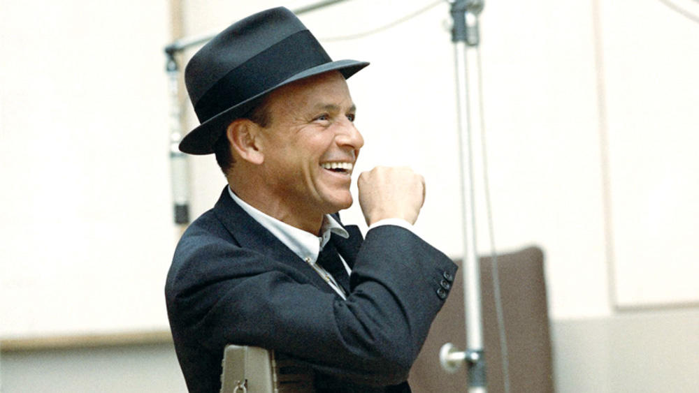

Frank Sinatra
The King of Swing

Frank Sinatra having a good time while having a recording session.
- 1915 - Born in Hobokin, New Jersey
- 1943 - Signed a contract with Columbia Records
- 1946 - Released his debut album, "The Voice of Frank Sinatra."
- 1950-53 - Career was at a halt until the release and success of the "From Here to Eternity" album.
- 1955-60 - Releases severly critically acclaimed Albums, "In the Wee Small Hours," "Songs for Swingin' Lovers!," "Come Fly with Me," "Only the Lonely," and "Nice 'n' Easy."
- 1960 - Starts own record label, Reprise Records."
- 1998 - Dies at the age of 82.
Here's a time line of Dr. Borlaug's life:
"You gotta love livin' baby, 'cause dyin' is a pain in the ass."
-- Frank Sinatra